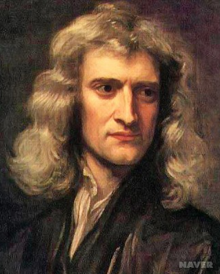
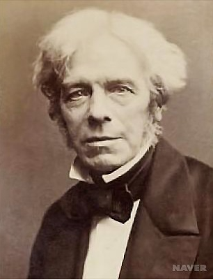
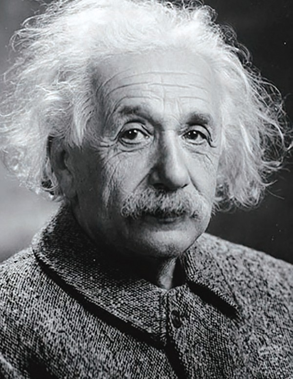
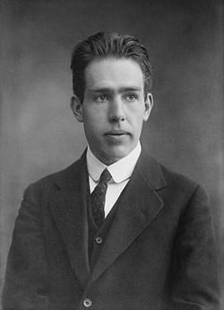

|  |
이름 : 아이작 뉴턴 [ Sir Isaac Newton ] 생몰 : 1642.12.25.~1727.3.20. 출생 : 영국 울즈소프 국적 : 영국 주요 업적 : 고전 물리학의 정립, 뉴턴식 망원경, 라이프니츠와의 미분 논쟁 |
|  |
이름 : 마이클 페러데이 [ Michael Faraday ] 생몰 : 1791.9.22.~1867.8.25. 출생 : 영국 런던 국적 : 영국 주요 업적 : 전기와 자기의 연관성, 전자기 유도 |
|  |
이름 : 아인슈타인 [ A. Einstein ] 생몰 : 1879.3.14.~1955.4.18. 출생 : 독일국 뷔르템베르크 왕국 울름시 국적 : 미국 주요 업적 : 광전효과, 상대성이론, EPR 역설 |
|  |
이름 : 닐스 보어 [ Niels Bohr ] 생몰 : 1885.10.7.~1962.11.18. 출생 : 코펜하겐 국적 : 덴마크 주요 업적 : 러더퍼드의 원자 모형에 양자론을 적용, 오늘의 원자 물리학의 기초를 닦음, 노벨물리학상(1922) |